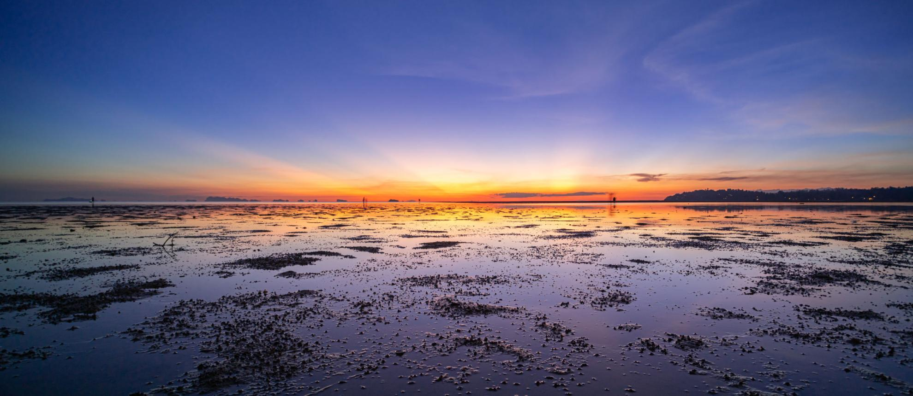
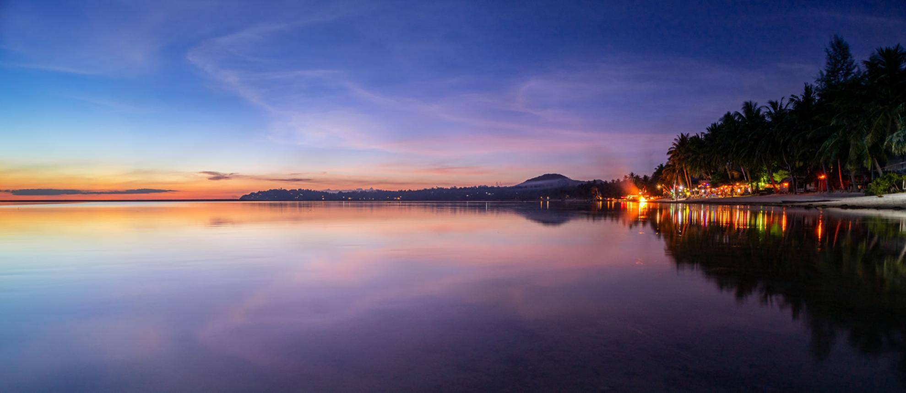
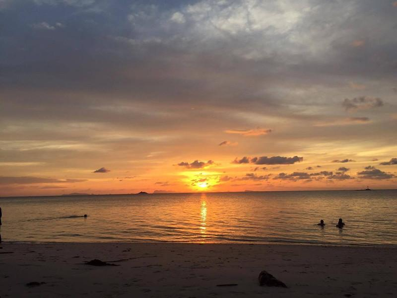
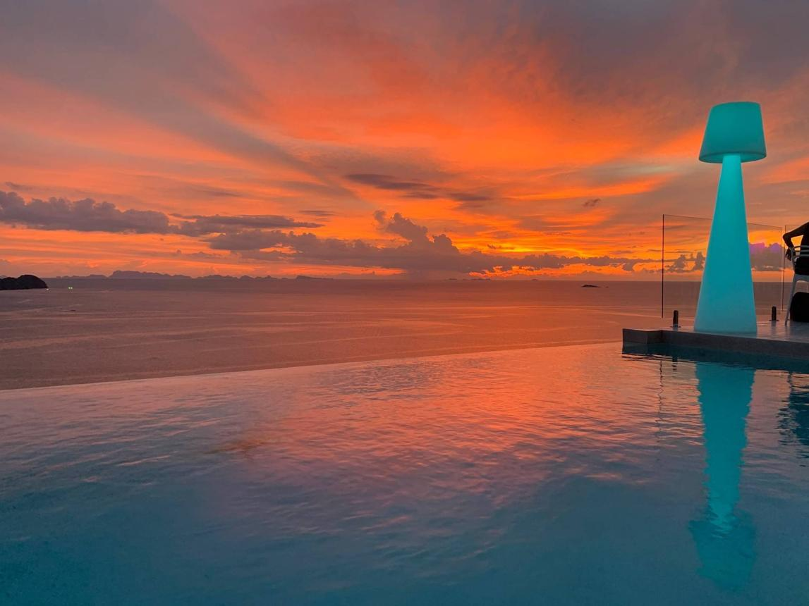

Best Sunset Spots in Koh Phangan: A Local Guide to the West Coast
Koh Phangan's best sunset spots — from Zen Beach and Hin Kong to Amsterdam Bar and Bluerama, with local tips for a slow evening on the west coast.

Koh Phangan's most beautiful moment doesn't begin after dark.
It begins about thirty minutes before sunset.
Every evening, scooters slow along the west coast, beach towels appear on the sand, and conversations become quieter as everyone turns towards the horizon. For a few fleeting moments, the island seems to pause. The sea glows gold, then blushes pink before melting into deep shades of purple and indigo.
While Koh Phangan is famous for its Full Moon nights, those who know the island best understand that its quietest magic happens long before the stars appear.
You don't need a party to experience the very best of Koh Phangan.
You simply need the right place, a little patience, and the willingness to slow down.
Whether your perfect sunset means bare feet on the sand, a panoramic viewpoint high above the Gulf of Thailand, or a quiet drink overlooking the horizon, this guide brings together our favourite sunset spots on the island—carefully selected by people who are proud to call Koh Phangan home.

Why the West Coast Offers the Island's Best Sunsets
The answer is wonderfully simple. Koh Phangan's western coastline faces directly towards the open Gulf of Thailand, offering uninterrupted views of the horizon. From Sri Thanu through Hin Kong and Wok Tum, there is nothing between you and the setting sun except the sea.
Unlike the east coast — known for sunrise and the famous Full Moon Party — the west coast has developed a completely different personality. It feels calmer, slower and more residential, attracting travellers looking for beautiful beaches, cafés, yoga studios and relaxed evenings rather than late-night parties. It's here that many locals choose to finish their day.

Sunset on the Beach
Zen Beach — Koh Phangan's Sunset Ritual
No place captures the spirit of Koh Phangan quite like Zen Beach. Every evening, travellers, musicians, yogis and long-term residents gather on the sand to watch another day come to an end. Some meditate quietly. Some play music. Others simply sit barefoot, watching the colours change across the horizon.
Despite its growing popularity, Zen Beach has retained its relaxed and welcoming atmosphere. It never feels like a performance — it feels like a community. Rather than rushing to capture the perfect photograph, people stay for the experience itself.
Getting there — Sri Thanu, via the small lane beside CM Thai Language School; allow about five minutes to walk through the trees before reaching the beach. View on map ↗
Good to know
- Relaxed atmosphere
- Live music (many evenings)
- Families welcome
- Barefoot beach
- Great for meeting people
Hin Kong Beach — Peace, Reflections & Endless Sky
If we had to choose one place that perfectly represents Koh Phangan's west coast, it would probably be Hin Kong. The beach stretches for kilometres and remains surprisingly peaceful, even during high season. At low tide, the sea retreats to reveal mirror-like reflections across the wet sand, creating one of the island's most photogenic landscapes.
Rather than dramatic cliffs or crowded viewpoints, Hin Kong offers something quieter. Space. Silence. And an ever-changing sky.
Just steps from the beach, L'Alcove has long been one of Hin Kong's favourite sunset spots. Its relaxed beachfront setting makes it an ideal place to enjoy a glass of wine or an apéritif while the sky turns from gold to deep indigo before continuing your evening.
For those planning dinner afterwards, Hin Kong is also home to Dar Mansour, where Moroccan slow dining extends the gentle rhythm of sunset with traditional dishes prepared over many hours.
Getting there — Along Hin Kong Road, on the west coast. Beach on map ↗ · L'Alcove on map ↗
Good to know
- Perfect for couples
- Excellent sunset photography
- Easy parking
- Beachfront wine at L'Alcove
- Beautiful at low tide
- One of the calmest sunset beaches
Wave Sunset Restaurant & Bar
Located directly on the beach, Wave Sunset Restaurant & Bar has quietly become one of the west coast's favourite places to watch the sun disappear below the horizon. With uninterrupted sea views, relaxed service and a welcoming atmosphere, it's the kind of place where one drink easily turns into two.
Whether you're stopping for a cocktail, fresh seafood or simply enjoying the changing colours of the sky, Wave offers one of the easiest sunset experiences on the island.
Getting there — On the west-coast beach strip. View on map ↗
Good to know
- Beachfront
- Cocktails
- Food served
- Easy access
- Great for groups
Kupu Kupu
Hidden just opposite Amsterdam Bar — but down at beach level — Kupu Kupu remains one of the west coast's quieter gems. Its beachfront location, comfortable seating and daily happy hour make it an excellent stop before dinner. Less crowded than some neighbouring venues, it offers a slower rhythm that perfectly matches the spirit of Koh Phangan. Sometimes the simplest places leave the strongest memories.
Getting there — Coastal road opposite Amsterdam Bar, down on the beach side. View on map ↗
Good to know
- Beachfront
- Daily happy hour
- Quiet & low-key
- Lovely at low tide
Secret Beach
Smaller than many of Koh Phangan's beaches, Secret Beach offers a gentler and more intimate sunset experience. The cove itself is beautiful, but don't miss the viewpoint on the road leading down to the beach — it provides one of the best elevated perspectives before you even reach the shoreline. Ideal for travellers looking for a quieter alternative to the island's busier sunset spots.
Getting there — North of Sri Thanu; the viewpoint is on the hill just before the road drops to the beach. View on map ↗
Good to know
- Small cove
- Calm atmosphere
- Easy swimming
- Beautiful viewpoint
- Ideal for couples
Charlie's Bar
A relaxed, sand-between-your-toes spot along the beach strip — the kind of unfussy place made for a barefoot sundowner with a cold drink in hand, far from any crowd.
Getting there — On the west-coast beach strip. View on map ↗
Good to know
- Barefoot
- Beachfront
- Casual
- Drinks
Ocean Vibes
Right by the water, Ocean Vibes pairs the sunset with food, drinks and a calm, easy atmosphere — a simple, pleasant place to settle in as the light fades over the sea.
Getting there — On the west coast, by the beach. View on map ↗
Good to know
- Beachfront
- Food & drinks
- Calm atmosphere
- Easy access
Tiki Beach
In Baan Tai, Tiki Beach is a very quiet stretch of sand just off the road. Sit outside the resort for a peaceful sunset — and don't be surprised by the resident, easy-going pack of dogs; it's a genuinely dog-friendly spot.
Getting there — Baan Tai, down the lane just past Phanganist Hostel. View on map ↗
Good to know
- Very quiet
- Dog-friendly
- Beach bar
- Off the beaten track

Sunset from Above
Sometimes, the finest sunsets aren't found on the beach, but high above it. Several of Koh Phangan's most spectacular viewpoints overlook the entire west coast, offering sweeping panoramas across the Gulf of Thailand.
Do keep in mind that some of the access roads are steep. If you're not comfortable riding a scooter uphill, it's perfectly fine to park lower down and walk the final section.
Amsterdam Bar — The Island's Most Famous Sunset View
Ask almost any local where to watch the sunset, and Amsterdam Bar will almost certainly be mentioned. Perched high above the coastline between Wok Tum and Hin Kong, it has become one of Koh Phangan's iconic viewpoints.
From its elevated terraces, the view stretches across the entire west coast, with the islands of Mu Ko Ang Thong National Marine Park visible on clear evenings. Thai-style mattresses, an infinity pool and a lively atmosphere make it a favourite among younger travellers and groups of friends. It can become busy, particularly during high season and around Full Moon week, so arriving early is highly recommended.
Getting there — On the coastal hill road between Wok Tum and Hin Kong; the climb is steep, take it slowly. View on map ↗
Good to know
- Infinity pool
- Cocktails
- Food available
- Young atmosphere
- Panoramic views
Bluerama — Sunset with a Touch of Elegance
Just before Amsterdam Bar sits one of the island's most refined sunset venues. Bluerama offers an entirely different atmosphere. Designed around an adults-only infinity pool overlooking the Gulf of Thailand, it feels calmer, more sophisticated and perfectly suited to couples or anyone seeking a quieter evening.
Comfortable lounge seating, excellent cocktails and beautifully presented food make it easy to spend several hours here. If you're planning dinner, it's worth reserving one of the upper-terrace tables.
Getting there — Nai Wok Beach, just before Amsterdam Bar (162/1 Nai Wok Beach, Wok Tum). View on map ↗
Good to know
- Adults only
- Infinity pool
- Excellent cocktails
- Romantic atmosphere
- Reservations recommended for dinner
Apichada — A Treehouse Above the Sea
Tucked into the hills near Baan Kai, Apichada feels like the treehouse dream you never had as a child. Its simple wooden design, comfy Thai-style mattresses and unreal views over the south-west make it a favourite for a laid-back, elevated sunset — especially handy if you're coming from Haad Rin, Thong Nai Pan or Baan Tai.
Getting there — Near Baan Kai (by the Family Mart); the first hill is steep, so park at the bottom and walk if unsure. View on map ↗
Good to know
- Treehouse aesthetic
- Thai-style mattresses
- South-west views
- Relaxed & friendly
Three Sixty Rooftop Bar — A Different Perspective
Located above Koh Ma in the island's north-west, Three Sixty Rooftop Bar offers exactly what its name promises. Unlike the west-coast beaches, the rooftop setting allows uninterrupted views in every direction. As the sun begins to set, the changing light transforms the surrounding hills, coastline and neighbouring islands into an extraordinary panorama. The road is fully paved, making access easier than many hillside viewpoints.
Getting there — Above Koh Ma; head towards Utopia Resort and turn at the sign. View on map ↗
Good to know
- Easy access
- Panoramic rooftop
- Music
- Cocktails
- North-west views
Secret Mountain — Jungle Meets Ocean
Hidden among the hills above Baan Tai, Secret Mountain feels like a peaceful escape from the busier coastline. Here, jungle-covered hills meet distant ocean views, creating a completely different sunset atmosphere. Its terraces, swimming pool and relaxed setting make it a wonderful place to spend a slow afternoon before watching the final light disappear behind the mountains.
Getting there — Baan Tai hills, central island (Ban Kao Mae Ngam); the concrete road up is narrow and steep. View on map ↗
Good to know
- Swimming pool
- Jungle views
- Relaxed atmosphere
- Less crowded
- Sunset dining available

Worth the Journey
Although the west coast offers the island's finest sunsets, two additional locations deserve a special mention.
Mae Haad & Koh Ma
At the north-west tip of Koh Phangan, Mae Haad is famous for the sandbank connecting the beach to the small island of Koh Ma. By day, it's one of the island's best snorkelling spots. Towards evening, it becomes wonderfully peaceful, and watching the sun sink beyond the sandbank creates one of Koh Phangan's most distinctive coastal landscapes.
Getting there — North-west, about five minutes from Chaloklum village. View on map ↗
Good to know
- Snorkelling
- Families
- Easy parking
- Quiet atmosphere
Leela Beach
Just south of Haad Rin lies one of Koh Phangan's most elegant beaches. Leela Beach remains surprisingly peaceful despite its proximity to the island's busiest area. Its west-facing position allows beautiful sunsets during much of the year, particularly for couples looking for a quieter atmosphere. Seasonally, the sun may set slightly further north, but the beach remains one of Koh Phangan's hidden treasures.
Getting there — South, about five minutes' walk from Haad Rin. View on map ↗
Good to know
- Couples
- Quiet beach
- Easy walk from Haad Rin
- Romantic atmosphere

How to Enjoy Sunset Like a Local
Sunset on Koh Phangan isn't something to rush. A few simple habits can make the experience even more memorable.
- Arrive 30 to 40 minutes before sunset.
- Stay for the blue hour after the sun disappears — the colours often become even more beautiful.
- Check the tide before visiting Hin Kong if you're hoping to photograph the reflections.
- Bring a sarong or light towel to sit comfortably on the sand.
- Resist the temptation to leave immediately after sunset. Some of the island's most peaceful moments happen once the crowds begin to disperse.
From Sunset to Slow Evenings
In Morocco, evenings are rarely hurried. Dinner begins with conversation rather than menus. Time slows down. Plates are shared. Mint tea often arrives long after dessert.
On Koh Phangan's west coast, sunset naturally creates that same rhythm. As the last light fades over the Gulf of Thailand, there is no reason to rush.
Just a few minutes from Hin Kong Beach, Dar Mansour continues the evening with slow-cooked Moroccan dishes inspired by generations of tradition. Tajines, tanjias and recipes patiently prepared over many hours invite guests to extend the calm of sunset around one table — the heart of our slow-food philosophy. To hold onto that calm, we simply recommend reserving your table and pre-ordering ahead.
Sometimes, the most memorable journeys begin after the sun has disappeared.
Final Thoughts
Koh Phangan rewards those who slow down. Whether you choose the barefoot atmosphere of Zen Beach, the peaceful reflections of Hin Kong, the panoramic heights of Amsterdam Bar or the elegant setting of Bluerama, every sunset tells a slightly different story.
Take your time. Stay a little longer. Watch the colours change one last time. Because on Koh Phangan, the day doesn't end when the sun touches the horizon — that's when the island becomes its most beautiful.
Frequently asked questions
What time is sunset in Koh Phangan?
Sunset is generally between 6:00 pm and 6:45 pm, depending on the season — a little earlier around December and later around June.
Which side of Koh Phangan is best for watching the sunset?
The west coast — particularly Sri Thanu, Hin Kong and Wok Tum — offers the island's finest sunset views, as it faces directly towards the open Gulf of Thailand.
What is the most popular sunset viewpoint?
Amsterdam Bar is Koh Phangan's best-known sunset viewpoint, while Bluerama offers a quieter and more refined, adults-only alternative just beside it.
Which beach is best for a peaceful sunset?
Hin Kong Beach and Secret Beach are excellent choices if you're looking for a calmer atmosphere away from the larger crowds.
Where should I have dinner after sunset?
The west coast offers several dining options. To extend the slow rhythm of the evening, Dar Mansour in Hin Kong welcomes guests with traditional Moroccan slow dining inspired by generations of hospitality.
Taste the story around our table
The best chapters are written over a slow Moroccan dinner. Reserve your evening at Dar Mansour.